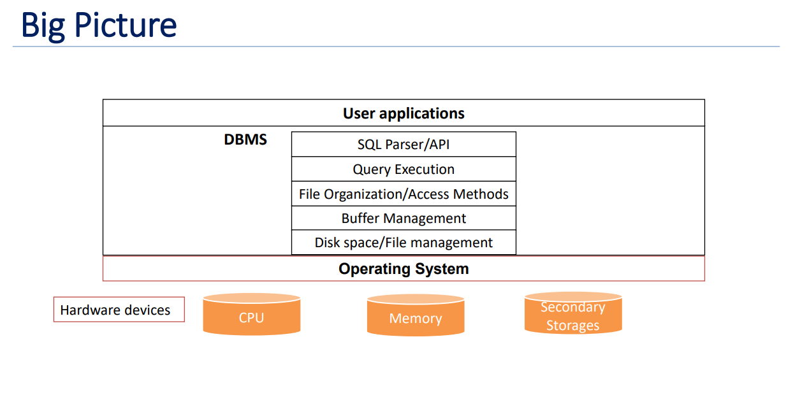
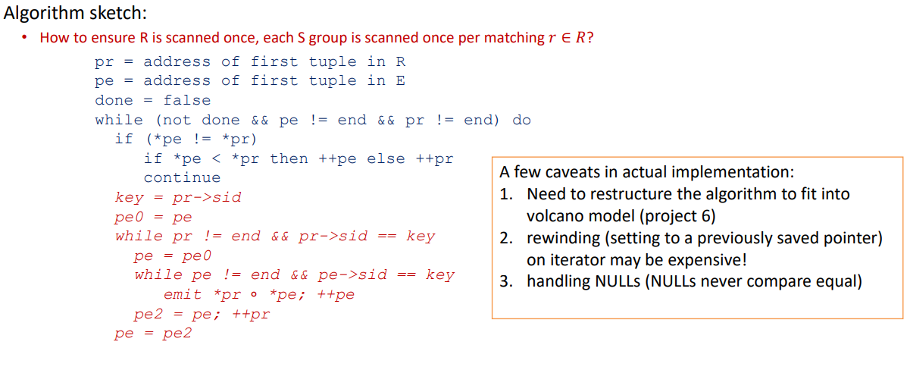
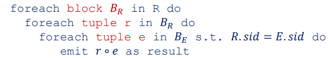
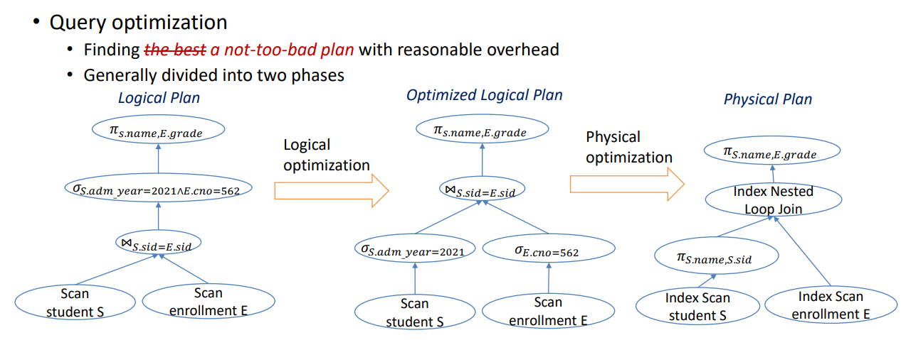

Project Contributers:
Viswanath Vankadara 😎
and
Niharika Deshmukh 😳.
Content credits: Viswanath Vankadara
I think as students of computer science and software engineers, we must have dealt with databases at some point in our lives so far. We were taught SQL during our undergrad and we inserted, read, updated and deleted data from a SQL database. I knew the SELECT statements, triggers, procedures, indexes, etc. but it was only limited to the application part of the science. I just knew what they are and how to use them.
Database by nature, seems so simple. It is a store room for data. We put things, we want to retrieve things, we can update things and we can discard some of them if we want to. But just like a lot of simple things in the world, achieving simplicity takes a lot of mindful thinking to get to where they are. A myriad of things are abstracted away from the end user, so that it becomes simple to use. So being curious in nature, I wanted to know and understand (and if possible build by myself) what happens under the hood of a database. This led me to take up the course CSE 562: Database Systems, during my master’s at UB.
In this project we designed and developed Taco DB. Taco DB is a single threaded mini relational database management system built in C++11. We built all the layers in the below image (in DBMS section) apart from SQL parser. We built Taco DB in phases, one component at a time. This gave us good insight into SINGLE RESPONSIBILITY principle and about ABSTRACTION as usual.
Data needs to be stored in the secondary (non-volatile) storage at the end of the day, for durability.
Lowest layer of DBMS software manages space on disk.
So we implemented a simple file system named FSFile using the Linux I/O system calls (e.g., open(2), close(2), pread(2), pwrite(2), etc.)
We ignored all the thread-safety related requirements, since we’re building a single-threaded database
Thought Process
Solution : Buffer Pool
Buffer Manager: To manage the buffer pool, we need a buffer manager.
Handling Page Request
Suppose there comes a request to read page with pid = 100. Now here arises 2 scenarios:
Buffer Eviction: To manage the buffer pool, we need a buffer manager.
Different kind of policies can be used to decide on the victim i.e. the page to be discarded from the buffer pool. Least Recently Used (LRU), Most Recently Used (MRU), and Clock being some of them.
The concept of buffer pinning comes handy here.
Potential problem with page eviction?
In this phase, we built the page layout of data pages in Taco DB. This is the de facto standard of data pages inside Taco DB. We dealt with page compaction (lazy) here which was very interesting to say the least. We also built heap file (table) interface as an access method for accessing data.
A heap file is simply an unordered (multi-)set of records. It is the most basic way of organizing records in DBMS. In Taco-DB, a heap file is implemented on top of the file manager managed virtual files and stores records in some arbitrary order in the list of pages.
This is where we struggled a lot. Wrote code, debugged a lot, went back to design, thought about corner cases, wrote code again, debugged again.
But finally we did it. We built a self-balancing indexing structure from scratch.
This made us imprint the fact that always stays with us from then: “Weeks of coding can save you hours of planning”
Index is something that makes the job of searching something faster. Remember, the index we have in the first pages of text books. Index is a data structure that speeds up search on a few fields on a relation.
B-Tree
We first implemented the barebones structure of B-Tree, then B-Tree Search, then supported B-Tree Insertion and Deletion. It seems simple but I can assure you that it is not. You can find more info here.
So we essentially built a query processor for Taco DB in this phase. The objective of this phase was to implement the physical plans and execution states for the basic operators (eg: selection, projection, cartesian product, aggregation etc.) for query processing.
Technically, we had an (almost) fully functioning single-threaded database (without a SQL parser and an optional query optimizer) after this phase. The main theme of this phase was quite different from the previous phases. It focused less on the implementation of algorithms and manipulation of bytes. Rather it focused more on the common engineering patterns and the memory management. External sorting in Taco-DB is implemented as a separate component since it can be used in various scenarios.
Joins are very common and also Joins are very expensive! Join results can be as large as the cartesian product. Many approaches to reduce join cost:
Sort Merge Join:
For the entire query processing layer, we used Volcano model for structuring the implementation of the operators.
Suppose there are two relations R, E and they have a column in common, say sid Idea is to sort R on R.sid and sort E on E.sid. Merge them and emit the pairs with matching values on the join columns.
Index Nested Loop Join:
Indexes, specifically B+-Trees in Taco DB, can be leveraged to perform certain types of joins. We implemented the index nested loop join for equi-joins in this project.
As in the System-R style query plan, the inner relation of an index nested loop is always a table with an index built on top of a list of fields. The general idea of the index nested loop join is to use each output record of the outer plan to probe the provided index for the matching records from the inner table.
Finally, to get a hint on how the entire query processing pipeline (planning, optimization, and execution) works, we manually planned and optimized three queries for TPC-H, which is a common benchmark used to measure DBMS query performance.
© Domain Name. All Rights Reserved. Designed by HTML Codex
Resume